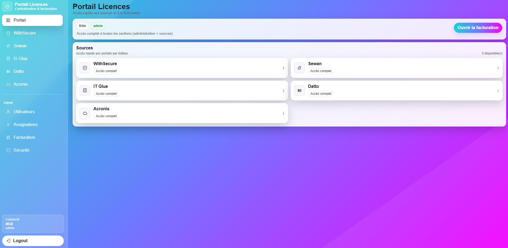
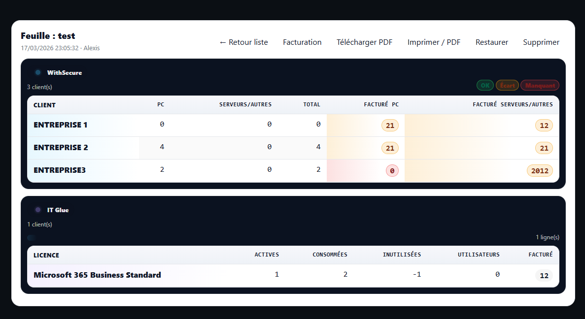
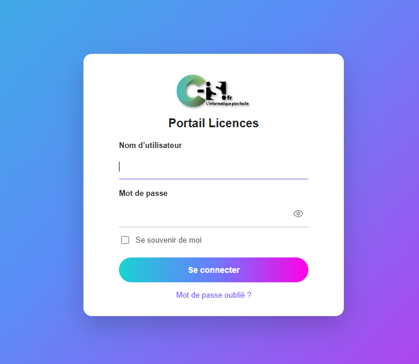

Contexte
L’entreprise utilise plusieurs portails, exports et outils fournisseurs pour suivre les licences logicielles. Cette dispersion rend la consultation globale plus longue et moins confortable pour les techniciens.
Projet réalisé dans le cadre de ma 2ᵉ année de BTS CIEL option Informatique et Réseaux, au sein de l’entreprise C-ISI à Thann. L’objectif était de concevoir une application web capable de centraliser, normaliser et consulter des informations de licences issues de plusieurs sources, dans une interface unique, claire et sécurisée.
L’entreprise utilise plusieurs portails, exports et outils fournisseurs pour suivre les licences logicielles. Cette dispersion rend la consultation globale plus longue et moins confortable pour les techniciens.
Il n’existait pas d’outil unique permettant de retrouver rapidement, pour un client donné, les licences utiles dans une vue claire, homogène et exploitable au quotidien.
J’ai développé une solution web centralisée capable de récupérer les données, les uniformiser, les stocker dans PostgreSQL, puis les afficher dans un portail sécurisé.
Des scripts récupèrent régulièrement les données depuis plusieurs services externes ou fichiers d’export.
Les informations sont retraitées pour obtenir une structure homogène, exploitable et cohérente.
Les données sont enregistrées dans PostgreSQL avec mise à jour automatique et logique d’upsert.
Une interface web permet d’accéder aux informations de manière rapide, filtrée et sécurisée.
Identification du problème métier, définition des objectifs et formalisation des exigences.
Choix de Proxmox, Ubuntu Server, Nginx, Flask et PostgreSQL selon des critères techniques et pédagogiques.
Création de la base, des scripts de synchronisation, de l’application web et des interfaces d’affichage.
Configuration SSH, pare-feu, mises à jour, fail2ban, tests fonctionnels et documentation du projet.
Ce projet m’a permis de travailler à la fois sur l’infrastructure, la base de données, le développement web, l’automatisation, la sécurité et la gestion de projet, dans un contexte proche d’un besoin réel d’entreprise.
Choisi pour disposer d’un environnement de virtualisation professionnel, souple et gratuit, adapté au déploiement d’une VM serveur dans un cadre BTS.
Retenu pour sa stabilité, sa documentation, sa compatibilité avec la stack web et sa faible consommation de ressources.
Utilisé comme reverse proxy pour améliorer la sécurité, la gestion HTTPS et le comportement en production.
Choisi pour développer une application claire, légère et compréhensible, avec une architecture progressive.
Utilisé pour centraliser les données dans une base robuste, adaptée au multi-utilisateur et aux traitements structurés.
Développés pour synchroniser les données à intervalles réguliers, sans action manuelle, avec journalisation des traitements.
Les visuels ci-dessous illustrent l’interface de démonstration du projet. Les noms, données clients, quantités et informations sensibles ont été retirés, masqués ou remplacés.


